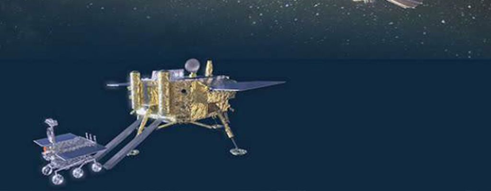

Chang 'e-4 probe
The development course
On May 21, 2018, the chang 'e-4 relay satellite queqiao was successfully launched to provide support for the chang 'e-4 lander and lunar rover.On December 8, the chang 'e-4 probe was successfully launched by a long March 3b carrier rocket from the xichang satellite launch center
On January 3, 2019, chang 'e-4 successfully landed in the pre-selected landing area of the feng keman impact crater in the south pole-@ Ken basin on the far side of the moon.
On January 11 of the same year, the chang 'e-4 lander and the yutu-2 rover completed shooting each other, reaching the set goals of the project, marking the success of the chang 'e-4 mission.
What does chang 'e-4 mean?
The world's first spacecraft to make a soft landing and patrol the far side of the moon.
Chang 'e-4 - demonstration